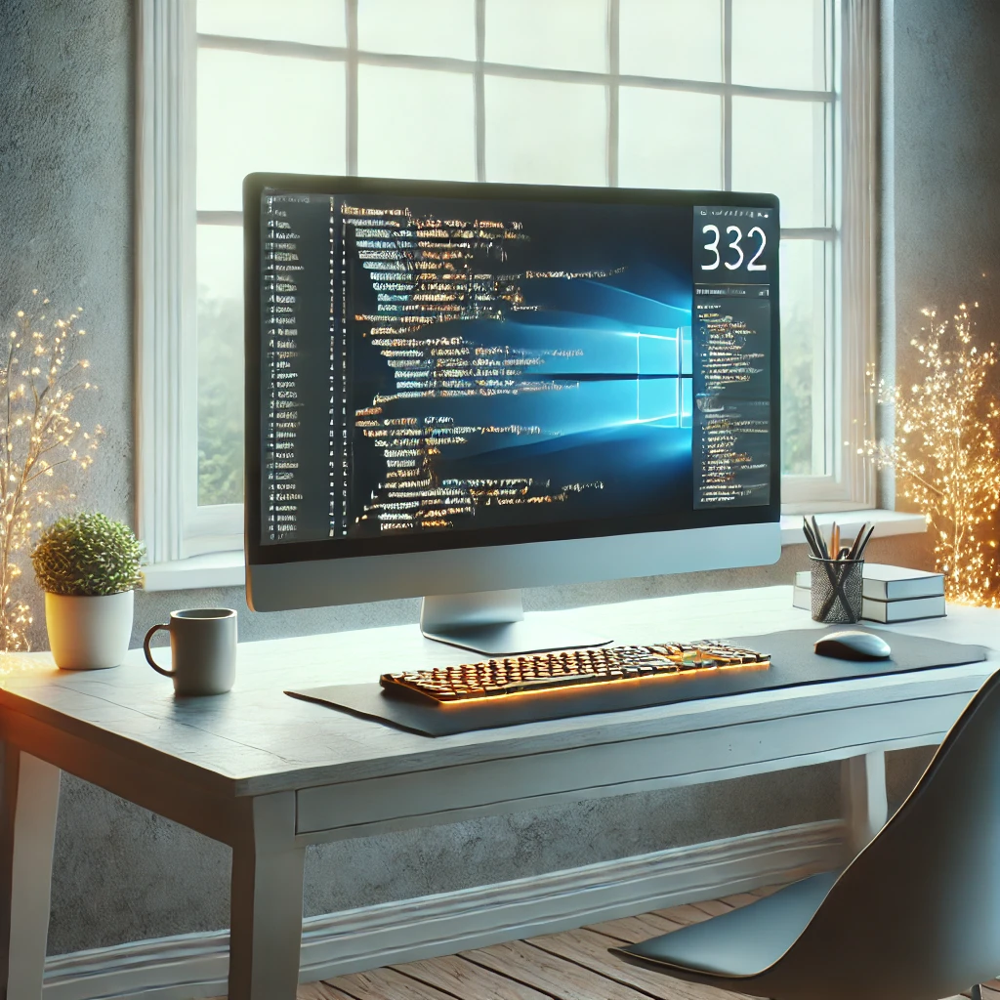

La Aventura de Programar
Un relato sobre los retos y satisfacciones de aprender programación.
Capítulo 1: El Inicio
Todo comenzó con la curiosidad de entender cómo funcionaban las páginas web. Veía sitios increíbles en internet y me preguntaba: "¿Cómo logran que todo esto funcione?". Fue entonces cuando decidí buscar en internet: "¿Qué es HTML?". Esa simple búsqueda abrió un mundo completamente nuevo ante mis ojos.
Al principio, parecía todo un idioma alienígena. Las etiquetas como <html>, <head> y <body> me confundían, pero al mismo tiempo me intrigaban. Me lancé a mi primer tutorial básico y logré crear una página que decía: "Hola, Mundo". No podía creer que un simple archivo pudiera generar algo visible en el navegador.
Pero no todo era tan sencillo. Aprender HTML fue solo el primer paso. Pronto descubrí que detrás de cada página web atractiva había mucho más: CSS para el diseño, JavaScript para la interacción, y un sinfín de tecnologías y conceptos que ni siquiera entendía. Cada día parecía abrir una nueva puerta hacia algo desconocido.
Comencé a dedicar horas a aprender. Algunos días, el tiempo parecía volar mientras experimentaba con nuevas ideas. Creé listas, tablas y pequeños formularios. Aunque eran básicos, me llenaban de orgullo. Recuerdo la emoción de mostrarle mi primera página a un amigo, y aunque él no entendía mucho de programación, me dijo: "¡Esto se ve genial!". Esa validación fue todo lo que necesitaba para seguir adelante.
Sin embargo, también enfrenté mis primeras frustraciones. A veces, un simple error tipográfico podía hacer que toda la página fallara, y me quedaba mirando fijamente el código sin saber qué estaba mal. Aprendí rápidamente la importancia de revisar y ser detallista. Cada pequeño error me enseñó algo nuevo, y con cada solución, mi confianza crecía.
El inicio fue como descubrir un universo paralelo, donde cada línea de código era una pequeña estrella que iluminaba mi camino. Lo que comenzó como una simple curiosidad se estaba convirtiendo en una pasión que no podía ignorar.
Capítulo 2: Los Retos
Conforme avanzaba en mi aprendizaje, llegaron los verdaderos desafíos. El primer gran obstáculo fue CSS. Intentar alinear un simple texto en el centro de la pantalla se sentía como descifrar jeroglíficos. Y luego estaba JavaScript, que parecía tener vida propia, siempre arrojando errores en la consola que no entendía.
Recuerdo una noche en particular: estaba tratando de hacer un menú desplegable. Había visto tutoriales, copiado ejemplos y leído documentación, pero nada funcionaba como quería. La frustración me llevó al límite, y estuve a punto de rendirme. Sin embargo, algo dentro de mí me decía que debía seguir intentándolo. Después de horas de prueba y error, finalmente lo logré. Ese pequeño triunfo fue una lección de perseverancia que nunca olvidaré.
Otro gran desafío fue entender la lógica de programación. Los bucles y las funciones eran como acertijos interminables. Al principio, no podía entender cómo una función podía "llamarse a sí misma" o cómo un bucle "sabía" cuándo detenerse. Pero con paciencia y práctica, todo comenzó a tener sentido. Me di cuenta de que la programación no era solo cuestión de escribir código, sino de aprender a pensar de una manera completamente nueva.
Además de los retos técnicos, también enfrenté obstáculos emocionales. Había días en los que sentía que no estaba progresando, que nunca sería lo suficientemente bueno. Compararme con otros programadores más experimentados solo empeoraba las cosas. Pero aprendí a centrarme en mi propio camino y a celebrar cada pequeño avance, por más insignificante que pareciera.
Los retos no desaparecieron con el tiempo, pero aprendí a verlos de otra manera. Cada problema se convirtió en una oportunidad para crecer, y cada error, en una lección valiosa. La clave estaba en no rendirse y en confiar en el proceso.
Fue durante esta etapa que descubrí el verdadero significado de la palabra "resiliencia". Aprender a programar no se trataba solo de adquirir habilidades técnicas, sino de desarrollar la fortaleza mental para enfrentar cualquier desafío que se presentara.
Capítulo 3: El Triunfo
Después de meses de práctica y errores, finalmente logré completar mi primer proyecto: un portafolio en línea. Aunque era algo sencillo, lo consideraba un triunfo personal. Cada línea de código era un testimonio de las horas de dedicación y aprendizaje que había invertido.
Lo mejor de todo fue la sensación de ver mi trabajo en acción. Poder abrir mi portafolio en el navegador y ver cómo todo funcionaba perfectamente era algo indescriptible. Era como si todo el esfuerzo, las noches sin dormir y los momentos de frustración hubieran valido la pena.
Pero el triunfo no era solo mío. A lo largo del camino, conocí a otros aprendices de programación que compartían mis mismas luchas y sueños. Juntos, formamos una pequeña comunidad donde nos apoyábamos mutuamente, compartíamos recursos y celebrábamos nuestros éxitos. Esa red de apoyo fue fundamental para mantenerme motivado y enfocado.
El momento más emocionante llegó cuando recibí mi primer comentario positivo de alguien fuera de mi círculo cercano. Un usuario anónimo dejó un mensaje en mi portafolio diciendo: "¡Buen trabajo! Este diseño es realmente inspirador". Ese simple comentario me llenó de orgullo y me dio la confianza para seguir adelante.
Ahora, cada vez que miro hacia atrás, me doy cuenta de cuánto he crecido, no solo como programador, sino también como persona. Aprender a programar me enseñó a ser más paciente, a enfrentar los problemas con determinación y a valorar el esfuerzo que implica crear algo desde cero.
El triunfo no es el final del camino, sino el comienzo de nuevas aventuras. Cada proyecto es una oportunidad para aprender algo nuevo, para desafiarme a mí mismo y para demostrar que, con esfuerzo y dedicación, no hay límites para lo que puedo lograr.